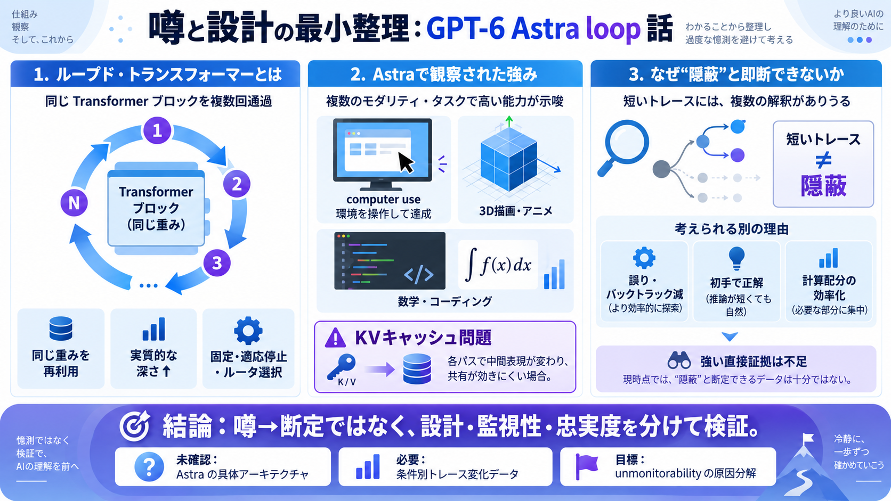

噂（主張）
ループ＝トレース監視の“見えにく化”

「ループド・トランスフォーマー」が推論トレース（chain of thought）を“隠す”のでは、という論点を、技術背景からバランスよく切り分けます。
対象：looped transformers（再帰的な深さ）／computer use（環境操作）／推論トレースの可視性 （日本語補助：再帰=再び回す・ループ）
「ループ構造があると、推論過程（chain of thought）が見えにくくなる」という噂があります。記事は、その因果を“主要因”とは断定できないと論じます。
ループド・トランスフォーマーは、Transformerブロック（層）を“別の設計”で増やすのではなく、同じ重みを使い回して計算回数（実質的な深さ）を増やします。
ループ回数の決め方が違うと挙動も変わります。固定・適応（止める）・ルータ選択など、複数のバリエーションがあります。
記事の評価では、GPT-6 Astraは前モデルより幅広く高性能で、特に3D描画・アニメーションや数学・コーディング、さらに“computer use”で目立つとされています。
ループの各パスでは中間表現が変わりやすく、注意のキー・バリュー（KV）もパスごとに扱いが難しくなり、キャッシュ節約が素直に進まないことがあります。
推論トレースが短くなる理由は複数あります。誤り回数の減少、最初から当てる能力、内部の計算配分（効率）などで、結果として短く見えるだけでも起きます。
記事は「偽の推論トレースが増える」と強く断定する証拠はない、と整理します。さらにOpenAI側の方針や議論も踏まえ、単純なアーキテクチャ因果に寄せない姿勢です。
「Astraがどのループド・トランスフォーマー形を採用しているか」は未確認です。記事も、The Information由来の“噂/スクープ”として扱い、公開裏取りなしでは断定しません。
関連研究の示唆では、ループは“memorization（記憶）を増やす”より、“reasoning（推論/問題解決）計算を改善する”方向です。能力向上の副作用としてトレースが短くなる余地があります。
ループド・トランスフォーマーは推論計算を増やし得ますが、「それが主要因で推論トレースが隠れる」とは現時点で言い切れません。将来は、アーキテクチャ特定と監視性・忠実度の計測データで因果を切り分ける必要があります。
No references found